Introduction to Image Analysis
Erick Martins Ratamero
Research Fellow
- These slides: ADDRESS HERE
- Navigation: arrow keys left and right to navigate
- 'm' key to get to navigation menu
- Escape for slide overview
- Where to find help after the workshop (links also available on the menu):
- ALL ACKNOWLEDGEMENTS HERE
Throughtout the presentation, test data will look like this: 01-Photo.tif


Commands on the Fiji menu will look like: [File > Save]
Motivation
Why do we want to automate image analysis?
{kind=link}
- It's faster
- It's less biased
- It's reproducible
- It scales
- It's modular
From http://doi.org/10.5281/zenodo.1042570
- Collection: think Fiji, Matlab, CellProfiler
- Component: think individual algorithms (stitching, blurring, segmenting)
- Workflow: series of components that achieve a certain task associated with a particular research project
We will learn how to use components from the Fiji collection so that you can assemble your own workflows


Widefield and Confocal microscopes acquire images in different ways.


Widefield and laser-scanning microscopes acquire images in different ways.

Detectors collect photons and convert them to a voltage

The A/D converter determines the dynamic range of the data
From https://petebankhead.gitbooks.io/imagej-intro/


Unless you have good reason not to, always collect data at the highest possible bit depth
32 bit is a special data type called floating point.
TL;DR: pixels can have non-integer values which can be useful in applications like ratiometric imaging.
Stacks
Understanding how Fiji deals with multidimensional images
Some file formats (eg. TIF) can store multiple images in one file which are called stacks
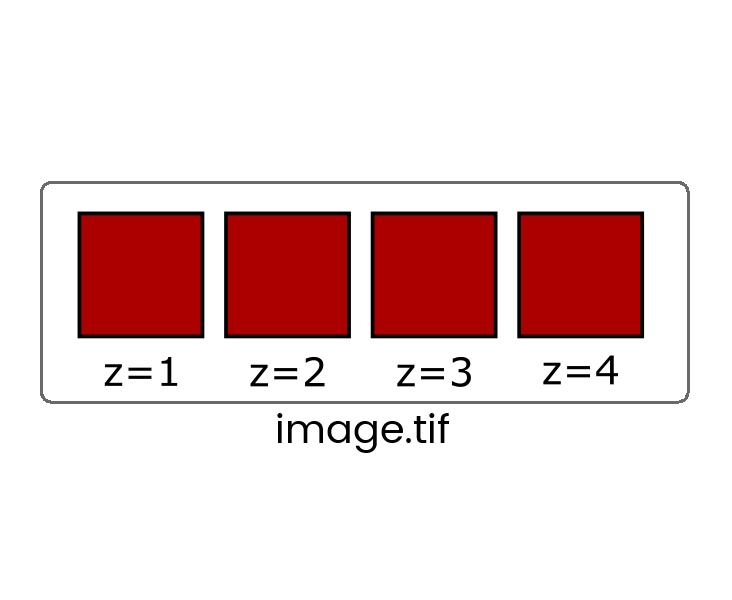 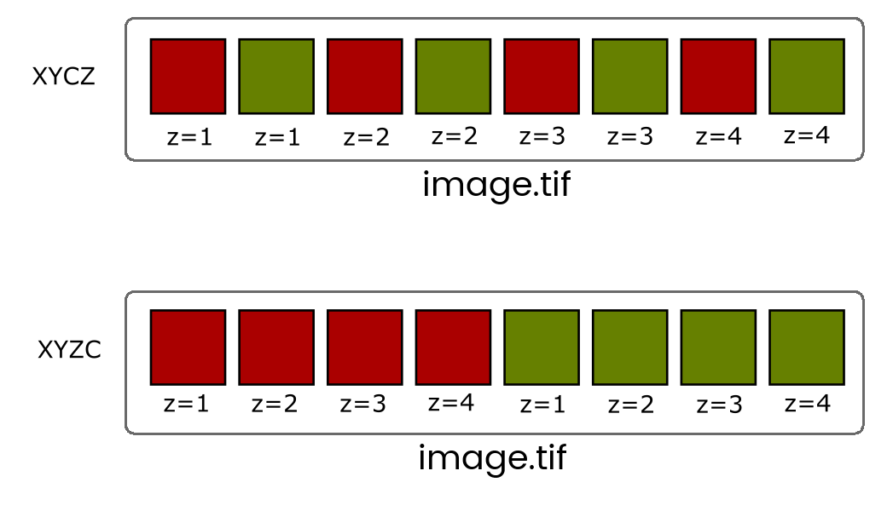When more than one dimension (time, z, channel) is included, the images are still stored in a linear stack so it's critical to know the dimension order (eg, XYCZT, XYZTC etc) so you can navigate the stack correctly.
You will very rarely have to deal with Interleaved stacks because of Hyperstacks which give you independent control of dimensions with additional control bars.
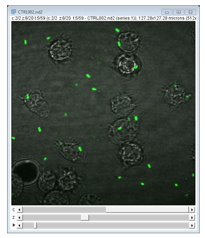 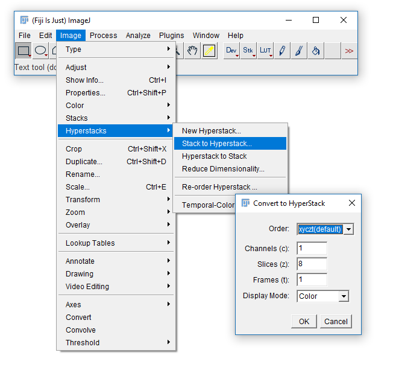Convert between stack types with the [Image > Hyperstack] menu
- Open
06-MultiChannel.tif - (If opening via URL run
[Image > Hyperstacks > Stack to Hyperstack]) - Navigate through the channels then run Channels Tool
[Image > Color > Channels Tool]and change to Greyscale
In this image, each channel already has an associated Look Up Table (LUT)
Change to Composite mode
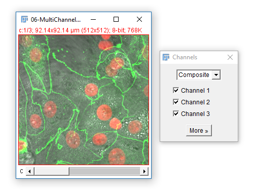- Use the check boxes (channels tool) to turn channels off
- Navigate through the channels. What happens?
- Adjust the Black and White Points
[Image > Adjust > Brightness & Contrast] - Draw a ROI on a bright area and Measure ('m')
IMPORTANT! The nav bar still selects the active channel, and that is where measurements / maniplulations are applied!
The infobar text, slider and 1px coloured image border all indicate which channel is selected.
Colour in Digital Imaging
What is colour? How and when to use LUTs
Colour in your images is (almost always) dictated by arbitrary lookup tables
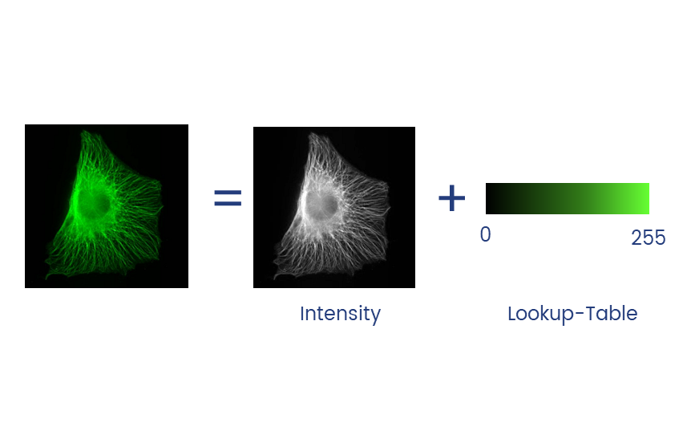 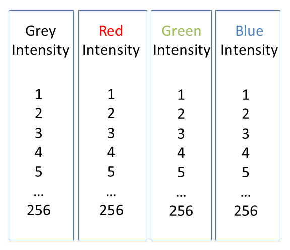Lookup tables (LUTs) translate an intensity (1-256 for 8 bit) to an RGB display value
Colour in your images is (almost always) dictated by arbitrary lookup tables
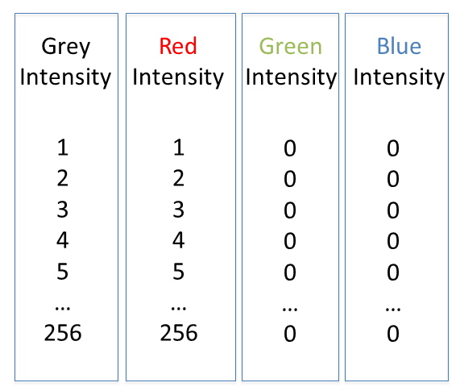 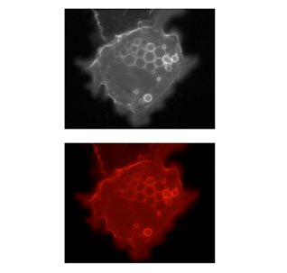Lookup tables (LUTs) translate an intensity (1-256 for 8 bit) to an RGB display value
You can use whatever colours you want (they are arbitrary after all), but the most reliable contrast is greyscale
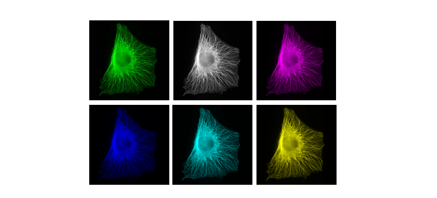More info on colour and sensitivity of the human eye here
~10% of the population have trouble discerning Red and Green. Consider using Green and Magenta instead which still combine to white.
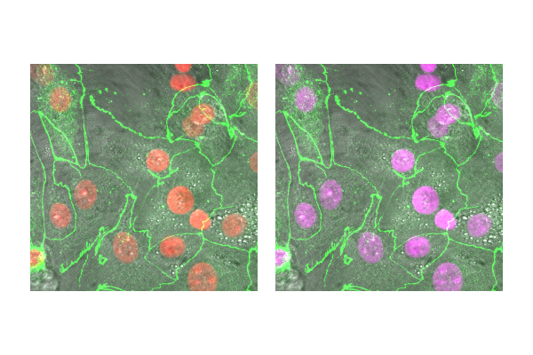- Open
06-MultiChannel.tif - (If opening via URL run
[Image > Hyperstacks > Stack to Hyperstack]) - Run
[Image > Lookup Tables], try a few different ones - Run Channels Tool
[Image > Color > Channels Tool], make sure you're in Color or Composite mode, hit More, select a LUT - Run
[Image > Color > Display LUTs]to see all the LUTs on your version of Fiji
A couple of useful LUTs:
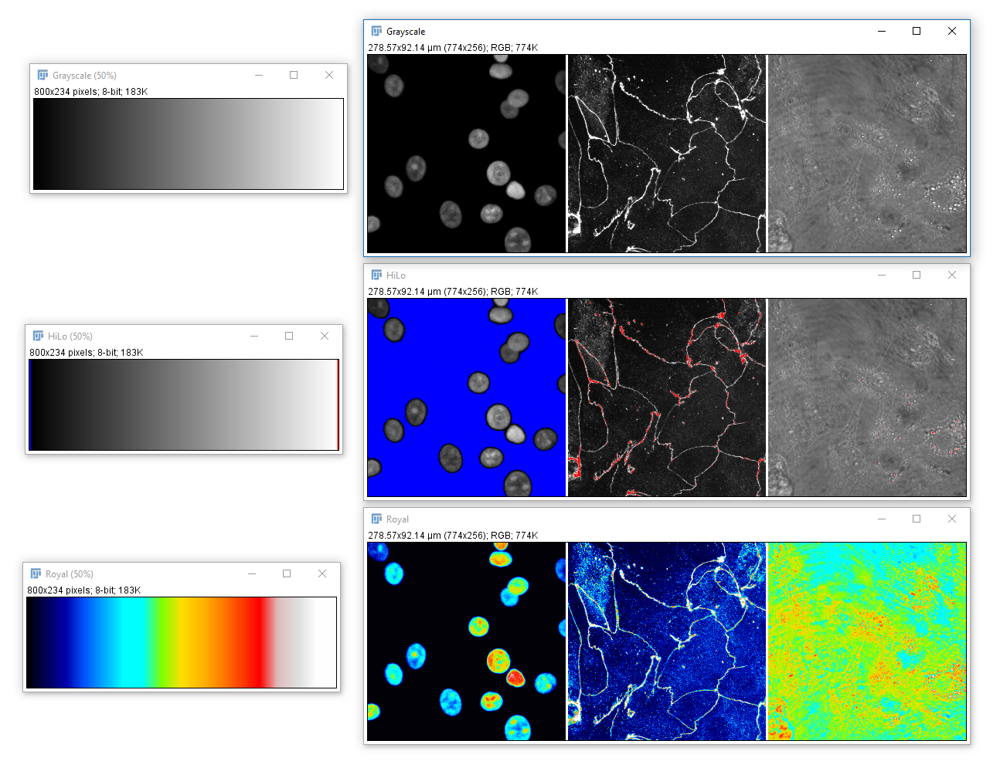Existing tools
The bioimage analysis ecosystem
ImageJ/Fiji
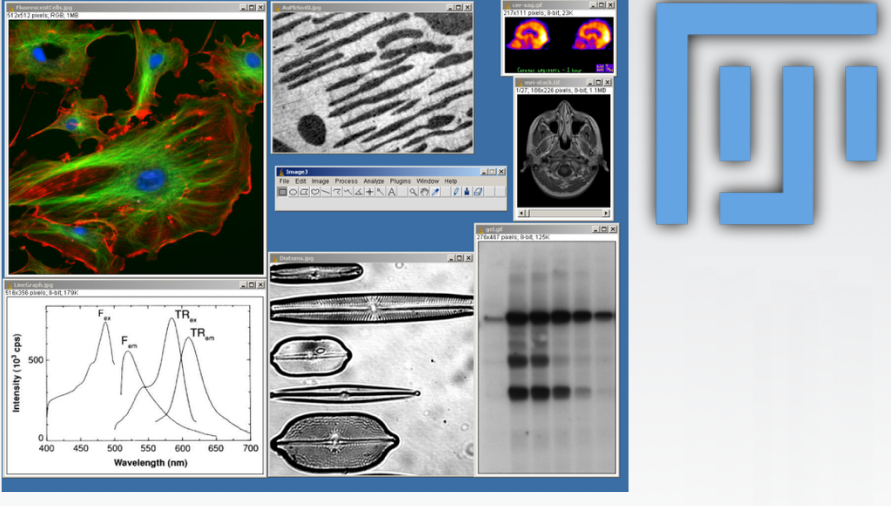Free, easy to run, most widely used, scriptable
From http://fiji.sc/Fiji
Icy
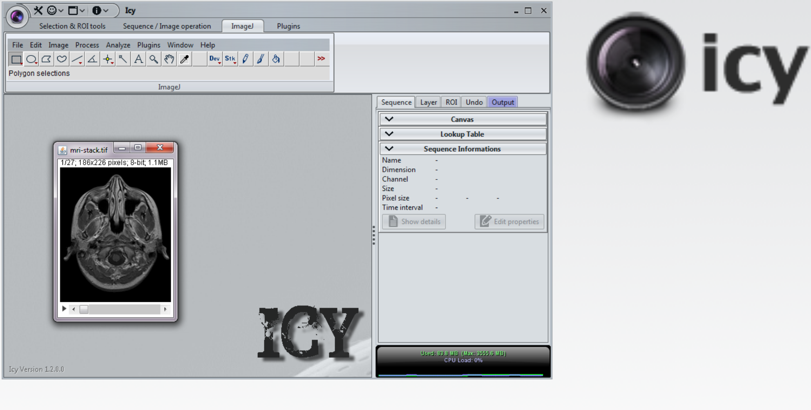Free, easy to run, visual scripting; not as widely used
From http://www.bioimageanalysis.org/
CellProfiler
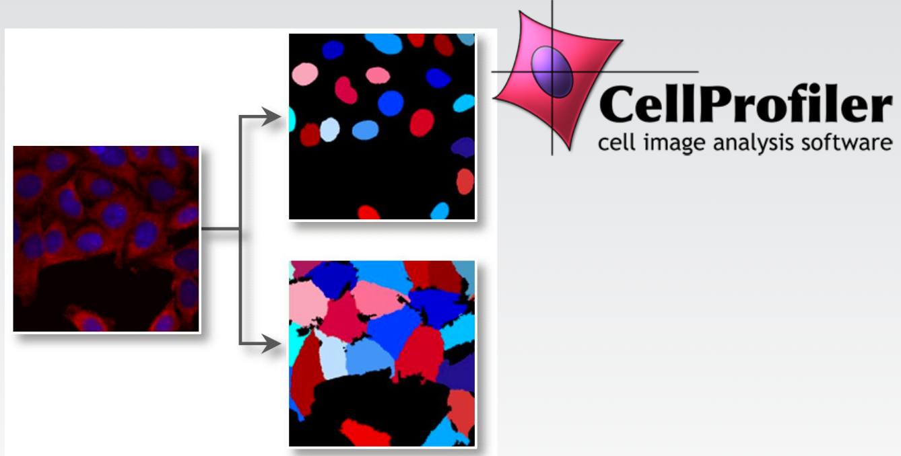Free, visual scripting, perfectly suited for high content screening and large-batch jobs
From http://www.cellprofiler.org/
ilastik
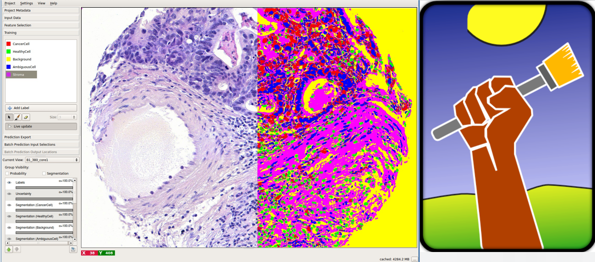Free (shallow) machine learning tool. Perfect for pixel classification/segmentation tasks
From https://www.ilastik.org
Imaris, Amira, Vaa3D
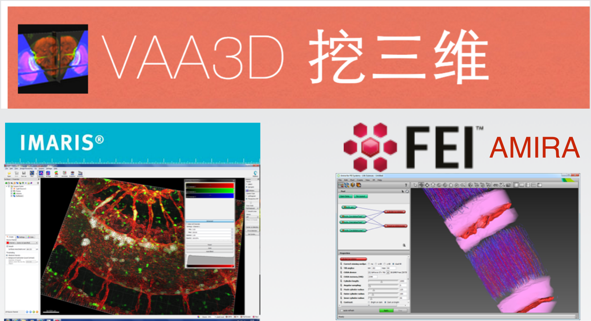Fantastic at identifying and tracking objects in 3D; expensive
From http://www.fei.com/software/amira-3d-for-life-sciences/, http:// www.bitplane.com/imaris/imaris, www.vaa3d.org/
Matlab, Python
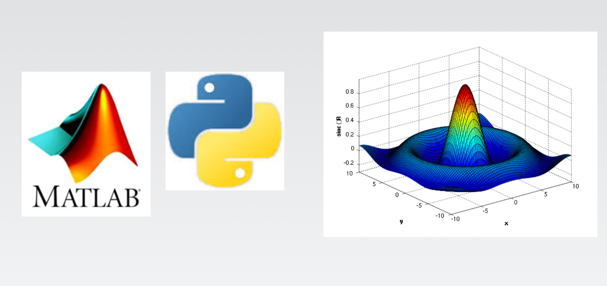The most flexible and the most difficult to use. No GUI (unless you code one). Python is free, Matlab is not
From en.wikipedia.org/wiki/MATLAB